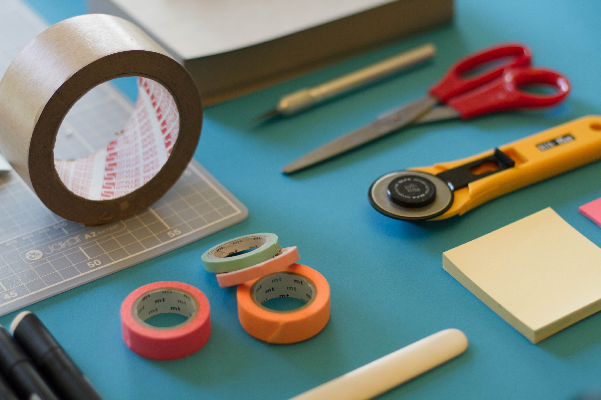

In her free time, Taylor enjoys the hobbies of crafting and reading, and even hopes to one day finish and publish her in progress novel. Taylor also enjoys travelling and plans to travel to Italy one day. She relaxes by listening to soft jazz while reading a good novel. Her favorite recent reads are The First Day of Spring by Nancy Tucker and Becoming by Michelle Obama. While crafting, Taylor enjoys making quilts, seasonal decorations, and clothing items (sometimes even for her pets). Over the last several years, Taylor has been on an upward trajectory both in personal and professional life that trend doesn’t appear to be going anywhere.
